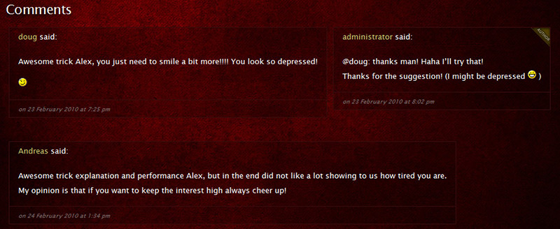

Amateur Magician
Amateur Magician is a blog created for my final year project. I was required to do a multimedia blog that would teach amateur magicians how to do magic. The blog should have a multimedia focus and should elicit interest from the community; therefore it should implement an attractive layout and consist of high quality elements.
{kind=link}
Target demographic
The audience to which this blog would appeal to would be consisted of people interested in magic. These people could be of any age, sex or race willing to spend some time on the topic that they are interested in: magic. In order to benefit from the blog, they should also be in possession of an internet connection. Identifying the audience of the blog is of significant importance, because without having a clear image of the audience this blog appeals to, it can easily derail the design and development process, and the aim of the blog could be diluted.
Planning
When planning the design of the blog, best practices in web design were followed. Using these practices to craft the design of the blog, certified that the blog would virtue a powerful, visually pleasing, original and modern design which would support its content. Moreover, following pre-established rules and good practices when constructing a blog design, made the lengthy process of picking one good and suitable design from a selection of many different designs, easier and more precise.
{kind=link}
Following best practices, a basic layout of the blog was laid out. The basic layout consisted of section containers, identifying where each element of the website would be placed on the webpage. This layout, popular amongst blogs, provides instant recognition and easy navigation around the blog. This eliminates the barrier of requiring from the user to learn the interface before using it.
By removing this requirement and making the design of the blog practical and familiar, the possibility of the user leaving the blog is reduced. Based on this initial layout, a prototype of the design would be created later in the production phase of the project.
Production
The initial step into crafting the logo for the blog was to use the blog's name “Amateur Magician” and experiment with different typefaces. This would generate a wireframe on which the final logo would be shaped from. Several logo ideas were created and presented together.
From those designs, the bottom right logo looked the most professional, appropriate, subtle, and legible. Moreover, the logo emphasised the “magician” part but it did not hide the “amateur” part striking a balance between those two words.
In order to appeal to as many people interested in magic as possible, browser issues and website rendering problems were taken into account. By developing the blog using clean and semantic coding most of the problems were avoided.
Nonetheless, some issues were detectable that changed the user’s experience depending on what browser was used. This problem was solved by using browser hacks and some clever CSS positioning of elements (such as an absolute positioned element inside a relative container). After many of these hacks were introduced, the blog looked almost identical on any browser (Firefox, Internet Explorer 7 and 8, Opera, Safari, and Google Chrome). It even made the blog look identical when browsing from a mobile phone, an iPhone in this case, and other Operating Systems (Mac OS X), enabling thus the user to have the same experience with any browser, OS, or device.
{kind=link}
Multimedia content
Aside from blog posts, tutorials with photos, I also created videos for the content of the blog. Here’s a video, from a total of five, that I created for the content of the blog. In this video tutorial, I’m showing you “How to Flatten a Beer Bottle Cap”.
Comments section
Major emphasis was put in the comments section of the blog. The layout implemented was a flexible one, automatically adjusting the position of the comments to their width. If a comment posted included many words and characters, then the comment would be displayed on a separate horizontal line. If the comment’s width was short then it would be displayed on the same horizontal line until the container’s width matched the total comment’s width like in the screenshot below.
Furthermore, the author’s comments were styled differently featuring a yellow triangle on the top right corner of the comment’s container, separating them from the ordinary ones. The testing of the comments section was performed by adding comments of different character lengths to see if the script would position the comments correctly. Moreover, the same validation used in the contact form (e-mail, field completion) was inherited in the comment form.

User testing
In order to assess how well users perform tasks on the blog, benchmark evaluation was carried out. This test would show exactly the problems and errors on the blog that users might experience. If any problems would occur, these would be analysed later, and the cause behind the problems would be identified.
{kind=link}
In total, four people were selected for testing the finished blog. The users were given a set of tasks to perform on the blog. The supervisor was given a four-page sheet where they would fill in the time taken for the test subject to complete a task, if the test subject has completed the task successfully, the number of errors, and the number of problems occurred whilst the test subject was performing the task.
{kind=link}
In order to improve the quality of the feedback received by testing the blog with users, a questionnaire was given to them to complete, immediately after the testing. In total, fifteen questions were asked, the last two being optional. The questionnaire was divided into two parts: the first section was to evaluate themselves, and the second part was to evaluate the blog. The questionnaire’s aim was to find out more about the user’s opinion regarding the blog.
{kind=link}
The reason why the project took so much time to finish (six months) was because we had to progress step by step each week following my tutor’s guidance. Moreover, I had to do extensive research, a competitor analysis and a literature review prior to starting designing the website. This project received a first class mark (80% out of 100%).